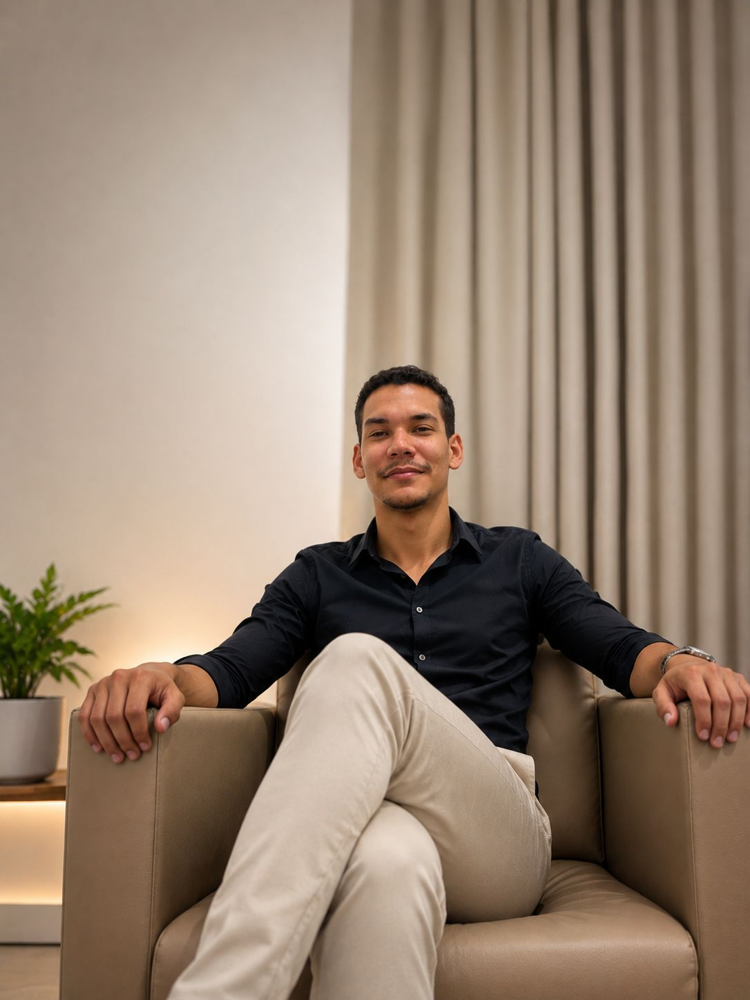

Atendimento psicológico com acolhimento humano e base científica.
Agendar Consulta
Sou graduado em Psicologia e atuo com atendimentos baseados na Terapia Cognitivo-Comportamental (TCC), abordagem voltada para o desenvolvimento emocional e promoção de qualidade de vida. Trabalho no acompanhamento de demandas como ansiedade, depressão, autoestima, dificuldades nos relacionamentos, inseguranças e questões emocionais do dia a dia, oferecendo um espaço acolhedor, ético e humanizado. Também atuo como aplicador ABA e acompanhante terapêutico, realizando acompanhamento individualizado conforme as necessidades de cada paciente.
Atendimento psicológico baseado na Terapia Cognitivo Comportamental (TCC), auxiliando na identificação de padrões de pensamento, emoções e comportamentos para promover mudanças positivas.
Suporte terapêutico em diferentes contextos do cotidiano, promovendo desenvolvimento emocional, social e comportamental.
Intervenção com base na Análise do Comportamento Aplicada (ABA), auxiliando no desenvolvimento de habilidades e autonomia.
Atendimento psicológico individualizado para crianças, adolescentes e adultos, com foco em saúde mental e qualidade de vida.
Tratamento voltado para redução de sintomas físicos e mentais da ansiedade, com técnicas terapêuticas baseadas em evidências.
Acompanhamento psicológico para compreensão emocional, fortalecimento interno e melhora da qualidade de vida.
Auxílio em conflitos afetivos, comunicação e construção de vínculos mais saudáveis.
Processo terapêutico para compreensão de si mesmo, emoções e padrões de comportamento.
“Um psicólogo muito humano, transmite sensibilidade, acolhimento. Ético, dedicado e atencioso.”
“Ambiente muito bom, tranquilo, bem localizado e estruturado, além de profissional excelente!”
“Muito ético, atencioso e competente. O acompanhamento fez muita diferença na minha vida.”
Sessões de psicoterapia realizadas com base na Terapia Cognitivo-Comportamental (TCC), abordagem focada na relação entre pensamentos, emoções e comportamentos. Um espaço acolhedor, ético e confidencial para auxiliar no desenvolvimento emocional, autoconhecimento e enfrentamento das dificuldades do dia a dia. Atendimento online.
Sim, o atendimento é realizado de forma online, proporcionando mais praticidade, conforto e flexibilidade para o acompanhamento psicológico.
As sessões possuem uma duração de 45 a 50 minutos
Endereço: Estr. do Forte do Arraial Novo do Bom Jesus, 657 - Cordeiro, Recife - PE, 50721-110
Abrir no Google Maps